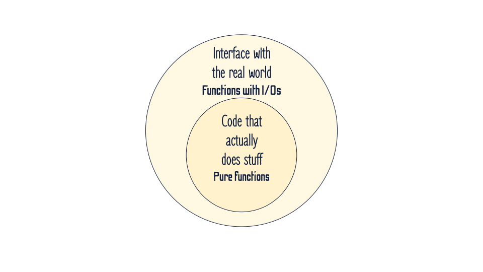

Off with their I/Os!
Best architecture practices to isolate I/Os
About me
- Lead data scientist at

- I deploy ML models in prod
 @SdgJlbl
@SdgJlbl
Disclaimer
This talk is very loosely inspired by
Alice's adventures in Wonderland
Into the rabbit hole
import pandas as pd
from sklearn.linear_model import LogisticRegression
from sklearn.preprocessing import StandardScaler
from sklearn.metrics import confusion_matrix
df_train = pd.read_csv("trainset.csv", index_col=0)
df_test = pd.read_csv("testset.csv", index_col=0)
X_train = df_train.drop(columns="label")
X_test = df_test.drop(columns="label")
y_train = df_train["label"]
y_test = df_test["label"]
# standardize the date to avoid badly conditioned matrices
scaler = StandardScaler()
X_train_scaled = scaler.fit_transform(X_train)
# train a logistic regression classifier
classifier = LogisticRegression()
classifier.fit(X_train_scaled, y_train)
# apply the result to test data
X_test_scaled = scaler.transform(X_test)
confusion_matrix(y_test, classifier.predict(X_test_scaled))
def standardise_data(input_file):
df = pd.read_csv(input_file, index_col=0)
X_train = df.drop(columns="label")
y_train = df["label"]
scaler = StandardScaler()
X_train_scaled = scaler.fit_transform(X_train)
parameters = pd.DataFrame(
data=np.vstack((scaler.mean_, scaler.scale_)),
columns=scaler.feature_names_in_,
index=["mean", "scale"],
)
parameters.to_csv("standardisation_parameters.csv")
return X_train_scaled, y_train, scaler
def train_classifier(cleaned_data, labels, model_name):
classifier = LogisticRegression()
classifier.fit(cleaned_data, labels)
joblib.dump(classifier, model_name)
def evaluate(scaler, model, input_file):
classifier = joblib.load(model)
df = pd.read_csv(input_file, index_col=0)
X = df.drop(columns="label")
y = df["label"]
X_scaled = scaler.transform(X)
return confusion_matrix(y, classifier.predict(X_scaled))
def main():
X_train, y_train, scaler = standardise_data("trainset.csv")
train_classifier(X_train, y_train, "saved_model.pkl")
print(evaluate(scaler, "saved_model.pkl", "testset.csv"))
def standardise_data(input_file):
df = pd.read_csv(input_file, index_col=0)
X_train = df.drop(columns="label")
y_train = df["label"]
scaler = StandardScaler()
X_train_scaled = scaler.fit_transform(X_train)
parameters = pd.DataFrame(
data=np.vstack((scaler.mean_, scaler.scale_)),
columns=scaler.feature_names_in_,
index=["mean", "scale"],
)
parameters.to_csv("standardisation_parameters.csv")
return X_train_scaled, y_train
Pure functions
versus side-effects
Pure functions
- Output depends only on the inputs
- Easy to unit test
- Great for parallelising
- NO side effect
All I/Os are side-effects!!!
How can we have both the advantages of using a functional coding style, and still do actual stuff?
Onion architecture
Onion architecture

def standardise_data(X_train):
scaler = StandardScaler()
X_train_scaled = scaler.fit_transform(X_train)
parameters = pd.DataFrame(
data=np.vstack((scaler.mean_, scaler.scale_)),
columns=scaler.feature_names_in_,
index=["mean", "scale"],
)
return X_train_scaled, parameters
def train_classifier(cleaned_data, labels):
classifier = LogisticRegression()
classifier.fit(cleaned_data, labels)
return classifier
def evaluate(scaler, classifier, data, label):
cleaned_data = scaler.transform(data)
return confusion_matrix(label, classifier.predict(cleaned_data))
def main():
preprocess_file = "scaler.csv"
model_name = "saved_model.pkl"
X_train, y_train = load_data("trainset.csv")
X_test, y_test = load_data("testset.csv")
# preprocessing
X_train_cleaned, scaling_parameters = standardise_data(X_train)
scaling_parameters.to_csv(preprocess_file)
# training
model = train_classifier(X_train_cleaned, y_train)
joblib.dump(model, model_name)
# evaluating
scaler = load_scaler(preprocess_file)
model = joblib.load(model_name)
confusion_mat = evaluate(scaler, model, X_test, y_test))
print(confusion_mat)
def load_data(input_file):
df = pd.read_csv(input_file, index_col=0)
return df.drop(columns="label"), df["label"]
def load_scaler(parameters_file):
parameters = pd.read_csv(parameters_file, index_col=0)
scaler = StandardScaler()
scaler.scale_ = parameters.loc["scale"].values
scaler.mean_ = parameters.loc["mean"].values
scaler.feature_names_in_ = list(parameters.columns)
return scaler
Here the madness begins
def update_confusion_matrix(gsheet_name, y_true, y_pred):
creds = ServiceAccountCredentials.from_json_keyfile_name(
"credentials.json"
)
client = gspread.authorize(creds)
gspreadsheet = client.open(gsheet_name)
worksheet = gspreadsheet.worksheet("Confusion matrix")
# get current values
current_conf_mat = np.array(worksheet.get(area="B2:D4"))
# update confusion matrix
conf_mat = sklearn.metrics.confusion_matrix(y_true, y_pred)
new_conf_mat = conf_mat + current_conf_mat
# save confusion matrix
worksheet.update(area="B2:D4", values=new_conf_mat.to_list())
def update_confusion_matrix(current_confusion_matrix, y_true, y_pred):
conf_mat = sklearn.metrics.confusion_matrix(y_true, y_pred)
return conf_mat + current_confusion_matrix
def load_confusion_matrix(gsheet_name):
creds = ServiceAccountCredentials.from_json_keyfile_name(
"credentials.json"
)
client = gspread.authorize(creds)
gspreadsheet = client.open(gsheet_name)
worksheet = gspreadsheet.worksheet("Confusion matrix")
return np.array(worksheet.get(area="B2:D4"))
def save_confusion_matrix(gsheet_name, data):
creds = ServiceAccountCredentials.from_json_keyfile_name(
"credentials.json"
)
client = gspread.authorize(creds)
gspreadsheet = client.open(gsheet_name)
worksheet = gspreadsheet.worksheet("Confusion matrix")
worksheet.update(area="B2:D4", values=data.tolist())
def main(y_true, y_pred):
gsheet_name = "foobar"
old_confusion_matrix = load_confusion_matrix(gsheet_name)
new_confusion_matrix = update_confusion_matrix(
old_confusion_matrix, y_true, y_pred
)
save_confusion_matrix(gsheet_name, new_confusion_matrix)
def load_confusion_matrix(gsheet_name):
creds = ServiceAccountCredentials.from_json_keyfile_name(
"credentials.json"
)
client = gspread.authorize(creds)
gspreadsheet = client.open(gsheet_name)
worksheet = gspreadsheet.worksheet("Confusion matrix")
return np.array(worksheet.get(area="B2:D4"))
def load_confusion_matrix(gsheet_name):
creds = ServiceAccountCredentials.from_json_keyfile_name(
"credentials.json"
)
client = gspread.authorize(creds)
gspreadsheet = client.open(gsheet_name)
worksheet = gspreadsheet.worksheet("Confusion matrix")
return np.array(worksheet.get(area="B2:D4"))
def load_confusion_matrix(worksheet, area):
return np.array(worksheet.get(area))
def save_confusion_matrix(worksheet, data, area):
worksheet.update(area, data.tolist())
def open_gworksheet():
creds = ServiceAccountCredentials.from_json_keyfile_name(
"credentials.json"
)
client = gspread.authorize(creds)
gspreadsheet = client.open("gsheet_name")
return gspreadsheet.worksheet("Confusion matrix")
def main(y_true, y_pred):
worksheet = open_gworksheet()
area = "B2:D4"
old_confusion_matrix = load_confusion_matrix(worksheet, area)
new_confusion_matrix = update_confusion_matrix(
old_confusion_matrix, y_true, y_pred
)
save_confusion_matrix(worksheet, new_confusion_matrix, area)
def load_confusion_matrix(worksheet, area):
return np.array(worksheet.get(area))
def save_confusion_matrix(worksheet, data, area):
worksheet.update(area, data.tolist())
Dependency injection
def open_gworksheet():
creds = ServiceAccountCredentials.from_json_keyfile_name(
"credentials.json"
)
client = gspread.authorize(creds)
gspreadsheet = client.open("gsheet_name")
return gspreadsheet.worksheet("Confusion matrix")
def main(y_true, y_pred):
worksheet = open_gworksheet()
area = "B2:D4"
old_confusion_matrix = load_confusion_matrix(worksheet, area)
new_confusion_matrix = update_confusion_matrix(
old_confusion_matrix, y_true, y_pred
)
save_confusion_matrix(worksheet, new_confusion_matrix, area)
Abstraction layer
def main(spreadsheet, y_true, y_pred):
old_confusion_matrix = spreadsheet.load()
new_confusion_matrix = update_confusion_matrix(
old_confusion_matrix, y_true, y_pred
)
spreadsheet.dump(new_confusion_matrix)
class GSpreadSheet:
def __init__(self, credentials, gsheet_name, worksheet_name, area):
creds = ServiceAccountCredentials.from_json_keyfile_name(
credentials
)
self.client = gspread.authorize(creds)
self.spreadsheet = self.client.open(gsheet_name)
self.worksheet = self.spreadsheet.worksheet(worksheet_name)
self.area = area
def load(self):
return np.array(self.worksheet.get(self.area))
def dump(self, data):
self.worksheet.update(self.area, data.tolist())
# without abstraction
def main(worksheet, y_true, y_pred, area="B2:D4"):
old_confusion_matrix = load_confusion_matrix(worksheet, area)
new_confusion_matrix = update_confusion_matrix(
old_confusion_matrix, y_true, y_pred
)
save_confusion_matrix(worksheet, new_confusion_matrix, area)
# with abstraction
def main(spreadsheet, y_true, y_pred):
old_confusion_matrix = spreadsheet.load()
new_confusion_matrix = update_confusion_matrix(
old_confusion_matrix, y_true, y_pred
)
spreadsheet.dump(new_confusion_matrix)
Abstraction layer
class ExcelSpreadSheet:
def __init__(self, local_path, worksheet_name):
self.local_path = local_path
self.worksheet_name = worksheet_name
def load(self):
return pd.read_excel(
self.local_path, sheet_name=self.worksheet_name,
index_col=0, header=0
).values
def dump(self, data):
current_df = pd.read_excel(
self.local_path, sheet_name=self.worksheet_name,
index_col=0, header=0
)
new_df = pd.DataFrame(data,
index=current_df.index,
columns=current_df.columns
)
new_df.to_excel(self.local_path, sheet_name=self.worksheet_name)
class SpreadSheet(Protocol):
def load(self) -> np.array:
...
def dump(self, data: np.array):
...
def main(spreadsheet: SpreadSheet, y_true: np.array, y_pred: np.array):
...
Bad abstraction layers are costly
When things get very uncooperative
The structure we would like to have:
- Load (I/Os)
- Do stuff (no I/Os)
- Dump (I/Os)
Real-life problems
- Log progress during a long computation
- Save intermediate states during a long training
- Conditions in workflow depending on external checks
Loggers
- Take a string as input
- Responsible for processing the string depending on the context
- No logic inside the logger
- Application code provides the string, and doesn't care what happens afterwards
Saving checkpoints during training
Create an object that behaves like a logger
- Pass instance through all layers to the bottom
- Or define a global variable once
- I/Os should occur at the highest possible level
- Inject your dependencies to keep your code agnostic
- Use abstraction layers
Practicality beats purity